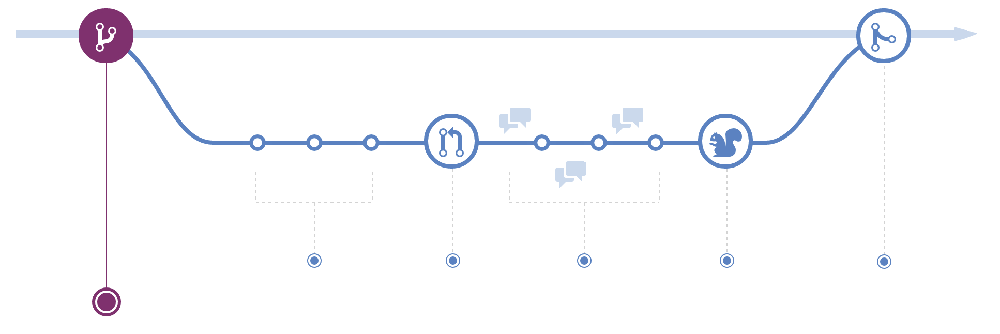

GitHub Flow
The gist
mastermust always be deployable.- all changes made through feature branches (pull-request + merge)
- Review Code. Have someone review your code.
- Push and verify changes in Staging/Production.
- Rebase to avoid/resolve conflicts; merge in to
master
Or, simply:


That is the entire flow. It is very simple, very effective and works for fairly large teams.
The workflow
# everything is happy and up-to-date in master
git checkout master
git pull origin master
# let's branch to make changes
git checkout -b my-new-feature
# go ahead, make changes now.
$EDITOR file
# commit your (incremental, atomic) changes
git add -p
git commit -m "my changes"
# keep abreast of other changes, to your feature branch or master.
# rebasing keeps our code working, merging easy, and history clean.
git fetch origin
git rebase origin/my-new-feature
git rebase origin/master
# optional: push your branch for discussion (pull-request)
# you might do this many times as you develop.
git push origin my-new-feature
# optional: feel free to rebase within your feature branch at will.
# ok to rebase after pushing if your team can handle it!
git rebase -i origin/master
# merge when done developing.
# --no-ff preserves feature history and easy full-feature reverts
# merge commits should not include changes; rebasing reconciles issues
# github takes care of this in a Pull-Request merge
git checkout master
git pull origin master
git merge --no-ff my-new-feature
# optional: tag important things, such as releases
git tag 1.0.0-RC1
useful config
# autosetup rebase so that pulls rebase by default
git config --global branch.autosetuprebase always
# if you already have branches (made before `autosetuprebase always`)
git config branch.<branchname>.rebase true
Naming Branches
Use prefixes when naming branches:
- Story Type
wip Works in progress; stuff that won't be finished soon
feat Feature I'm adding or expanding
bug Bug fix or experiment
exp Throwaway branch created to experiment
task Required changes
- Short Summary: 2-3 words about what the branch contains
For example, branch name - bug/missing-favicon
With this convention, you can quickly tell which branches have reached each different stage, and you can group them together easily using Git's pattern matching options.
$ git branch --list "bug/*"
bug/missing-favicon
bug/bar-foo
$ git branch --list "*/foo"
wip/foo
feat/foo
exp/foo